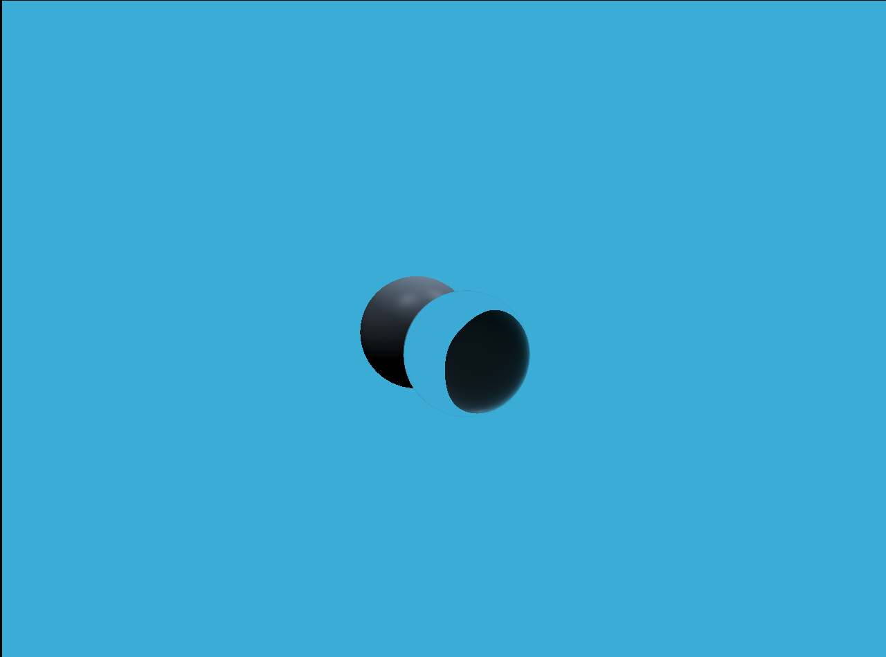
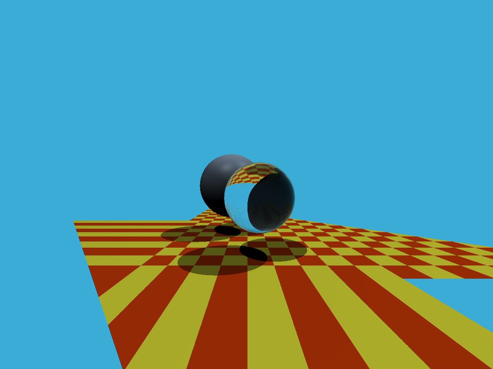
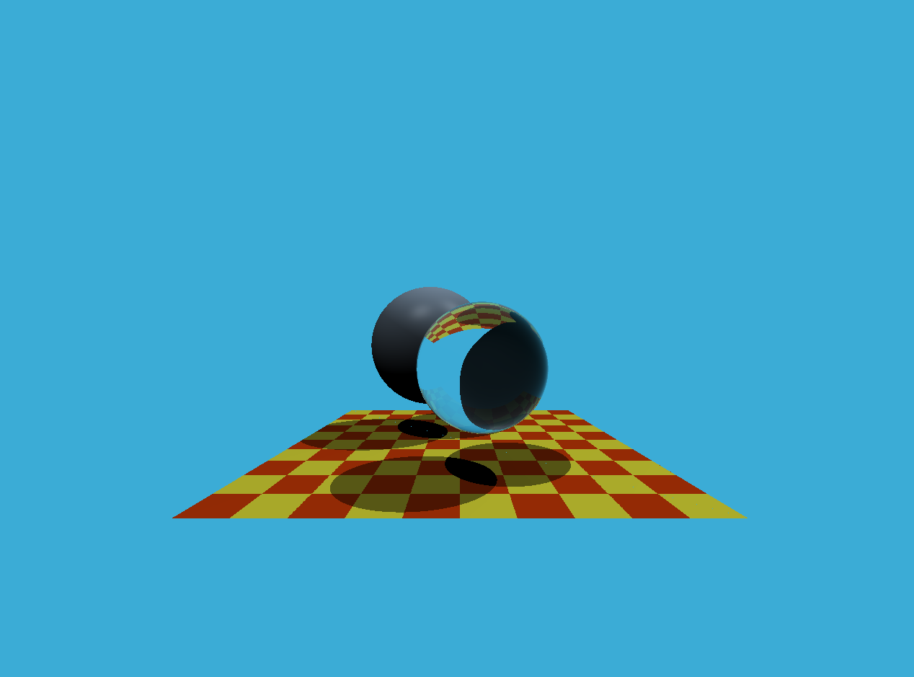

作业框架
此次输出图像格式为.ppm，Windows系统没有预置能打开该格式的软件. 可使用irfanview.
光线生成
这里主要是要将像素坐标对应到空间中去，课上对此没有怎么提及.
请参考Ray-Tracing: Generating Camera Rays.
似乎相机位置不对？
发现是将imageAspectRatio乘到y轴上了.

1 | // generate primary ray direction |
三角形相交
比较简单，按图索骥实现 Möller Trumbore 公式即可.
出现错误.

1 | if (t > 0 && b1 < 1 && b2 < 1 && 1 - b1 - b2 < 1) { |
应改为
1 | if (t > 0 && b1 > 0 && b2 > 0 && 1 - b1 - b2 > 0) { |
结果正确.
